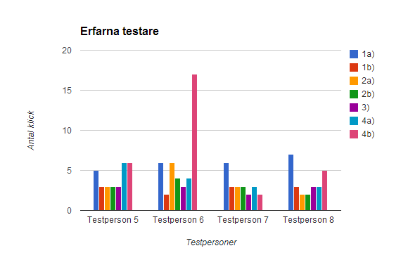
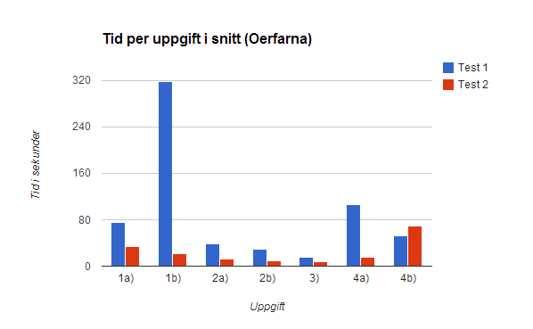

En redesign av
TimeEdit
eller
Konsten Att
Sminka en Gris
Funktionalitet
The TimeEdit we love

Problem
Problem
- Ej intuitivt
- Vissa uppgifter oerhört omständiga
- Osjälvklara steg för att nå målen
- Många steg för att utföra uppgifter
- Restriktivt gränssnitt
Användartest 1
Pilottest
Syfte
- Se att testerna fungerar som tänkt
- Få feedback på vårt agerande (som testhållare)
Resultat
- Slopade filmning av användare
- Finjusteringar av testproceduren
- Diskussioner om "Boka nästa lediga tid"
Utförande
- Uppgifter
- Scenario / Miljö
- Testare / Urval
- Mätning – Effektivitet
Uppgifterna
Utgick från kärnfunktionerna i produkten
- Boka specifikt grupprum:
- på en specifik tid
- på nästa lediga tid
- Ändra valfri bokning:
- Ändra "Egen text"
- Ändra "Kommentar"
- Ta bort en bokning
Mätdata
- Tid
- Problem / Fel
- Musklick (eller Touch på mobil)
- Subjektiva mått
Mätdata
Tid i sekunder

Mätdata
Antal musklick

Redesign
Fokus
- Ta bort steg – förenkla
- Koppla samman komponenter ("proximity")
- Rik och responsiv feedback


Användartest 2
Pilottest
Syfte
- Upptäcka uppenbara fel...
- Hitta förtydlingar och förbättringar...
- ...Uppdatera produkten inför huvudtesterna
Resultat
- Buggfixar
- Förklarande texter
- Små designändringar
Utförande
Samma som Användartest 1 men även:
- Finns inga erfarna testare att välja bland
- ...så testare fick tränas upp av oss innan test
Mätdata
Tid i sekunder

Mätdata
Musklick
Jämförelse
Vår design mot nuvarande TimeEdit
- Guessability var hög
- Learnability var högre
- Effiency var mycket högre!
Jämförelse
Tid

Jämförelse
Musklick
Demo
Sammanfattning
Förenkla!
- Färre steg – utan att hoppa över något
- Färre kontroller – men tillräckligt många
- Tydlig feedback – utan att bli för mycket
- Fler och bättre beskrivningar
Komplext
men inte komplicerat
- "Smart defaults" – men inte för smart
- Filtrering av stora mängder data i realtid kan förvirra
En andra iteration?
Vad hade kunnat göras?
- Slopa tidskontrollerna – för komplext för användande
- Arbeta mer med copywriting och beskrivande texter
- Undvika lika stora uppdateringar av data i gränssnittet
- Förenkla, förenkla, förenkla …